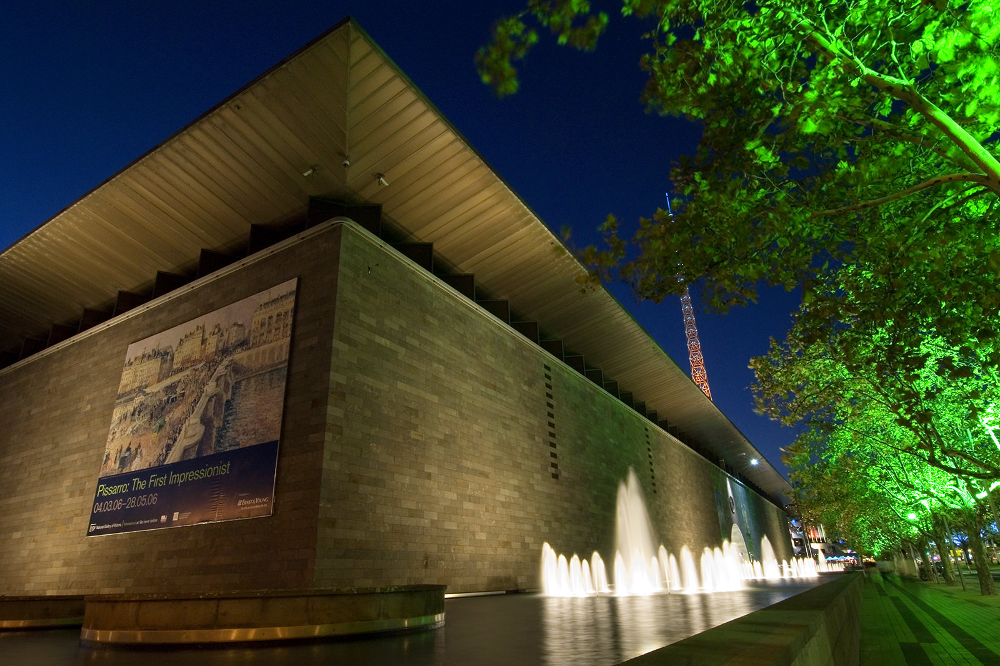
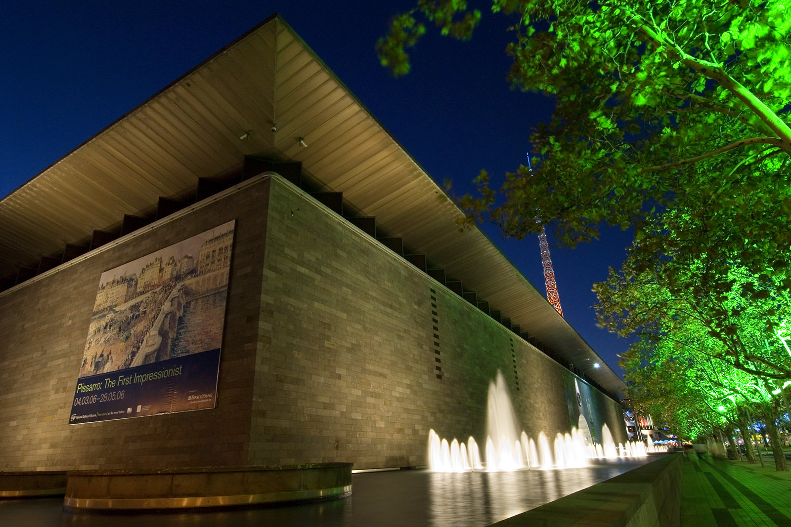

Melbourne is the youngest of all of the 'world cities'. Its rapid growth from a tiny speculative pastoral outpost in the 1850s into a world city within a mere 30 years, reaching around 1 million people by the turn of the century was phenomenal. In the 1880's Melbourne was given the title 'Marvellous Melbourne', and boasted a city that rivalled the great cities of Europe and North America. The city hosted the 1880 World's Fair, in the Royal Exhibition Building, which hosted the first parliament and still stands in the magnificent Carlton Gardens. The city was, until Canberra was built in the late 1920s, the federal capital of Australia. Now considered ‘the world’s most liveable city’, Melbourne’s rapid development and Hoddle’s foresighted grid design make it a city best seen by foot. Encapsulating distinct architectural movements and design, its buildings are one of the hidden charms of a city that also claims the title of cultural, sporting and artistic capital of Australia. These self-guided walking tours are a means to enjoy the distinct architecture of Melbourne and an opportunity to experience what the city has to offer.

 
